Taking Cube Views to the Next Level
In this chapter, we will go a few steps further with our Cube Views. We will discuss using parameters to make Cube Views dynamic for the ultimate User Experience. We’ll explore methods for using parameters for POV selections, rows and columns, and text. You will see examples of sharing Cube View rows and columns to help streamline reporting without sacrificing data quality.
Navigation links are a popular topic that will also be covered in this chapter with different ways to create and apply proper User navigation paths so that Users can access and consume data in a guided format. We will also explain the use of Cube View Extender Business Rules to fine-tune the look of formatted Reports and provide examples of how and when to apply this logic.
Taking Cube Views to the Next Level
Cube View Sharing
When beginning an implementation, the first thing you’ll do is requirements gathering – this is when your customer explains their business processes and defines expectations for the solution.
During this phase, your customer will provide detailed reporting requirements, including an Inventory of Financial Statements, supplemental reports, and visual presentations that must be produced from their solution upon going live. If you’ve been involved in this part of an implementation, you have likely received samples of Financial Statements from your customer; these samples often influence metadata design in terms of Account groupings and structure, Entity Aggregation, Currency Translation, and other variables that determine how your customer reports their data.
Requirements gathering is the most critical part of an implementation and serves as an outline of how the application should be configured. Think of this as a roadmap for your application build; requirements give you direct insight into what is important to your Users and provide guidance during the design phase.
It’s not uncommon for Cube Views to take a backseat during an implementation; after all, you can’t build Reports if you don’t have metadata established. But I say Cube Views are the star of the show, and building them early allows you to evaluate metadata design and immensely improves data validation time.
There are three basic requirements when creating a Cube View:
Define your rows
Define your columns
Define your Point of View
This can be a daunting task if you have hundreds of Reports to build, but the good news is that there are tools available to help reduce the workload and let you focus on more value-add configuration work.
Taking Cube Views to the Next Level › Cube View Sharing
Row and Column Sharing
Row and column sharing are Cube View properties that allow you to leverage User-Defined row and column sets to quickly generate dynamic Cube Views that are consistent and which reduce maintenance.
The key benefits of Cube View sharing are that they can significantly accelerate your Cube View creation, reduce formatting maintenance, and maintain consistency and data quality when metadata changes result in altered Member Expansions. They are also a great way for companies to standardize the reporting landscape and provide ‘one version of the truth’ while still providing flexibility and assisting with ‘self-service’ reporting.
Say you have two business units that produce an Income Statement, and each business unit is responsible for a different region, but they use a common Account structure. Let’s assume Cube View sharing is not being used, and you’ve created three separate Cube Views – the third being an aggregated business unit Total Income Statement. All the Cube Views have a POV, rows, and columns defined individually.
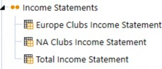
Figure 8.1
To add another layer of complexity, all business units must also produce Income Statements comparing Actual to Budget results, and Current Year to Prior Year. Keeping with the assumption that you have still not yet implemented Cube View sharing, you’ll need to create six additional Cube Views to display the required Reports by Scenario and Time.
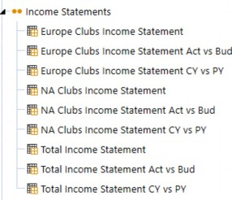
Figure 8.2
What happens when you add an Account Group to your Account Dimension, or even restructure your Accounts altogether? In this example, you would need to update the row sets on all nine Cube Views. Not only is this a time-consuming process, but its manual nature exposes risk since a User needs to remember to update all of the Cube Views. So how can you minimize risk and create Cube Views more efficiently? Use templates whenever possible to share rows or columns.
Taking Cube Views to the Next Level › Cube View Sharing
Templates
Templates are an easy way to establish solution standards for reporting and accelerate the future development of Cube Views. I highly recommend making a habit of establishing templates early on in an implementation, especially while building metadata, since the hierarchical structures will need to be validated when you begin loading and testing data.
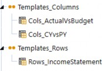
Figure 8.3
Notice above that we’ve created a row template for Income Statement Reports, and column templates for Scenario and Time comparisons according to our customer’s requirements. Now we’ll look at how to share the applicable rows and columns to our Total Income Statement Cube View. In practice, the Rows_IncomeStatement template would be shared with all Income Statement Cube Views.
| Note: Row templates are typically associated with a specific Report or Cube View, while column templates are more universal in nature and can be shared with various Cube Views. |
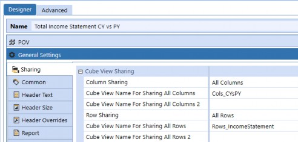
Figure 8.4
Thinking back to the example of Account structure changes, we have nine Cube Views, all using the same shared row template. This means that when we update the Rows_IncomeStatement template, all nine Cube Views will display the same row structure. This is much more manageable during implementation and sets your customer up for success.
Taking Cube Views to the Next Level
Dynamic Cube Views
You likely know, by now, that Cube Views display data in an organized fashion, but what you may not know is just how dynamically these objects can be configured to support various reporting and analysis requirements. In theory, a single Cube View can produce multiple Financial Statements by varying reporting metrics that are completely filterable based on User selections.
With a few parameters and substitution variables, you’ll be on your way to creating a User Experience that gives your Users more autonomy, but also guidance for finding the data that they care about. Financial analysis can sometimes be a daunting task – “Where do I look for data? How do I find where data came from? What am I even looking at?” – these are all questions I used to ask myself in my former career as an accountant. By the end of this chapter, you should have a basic understanding of how to make beautiful, consistent, manageable Cube Views that meet the needs of your Users.
Taking Cube Views to the Next Level › Dynamic Cube Views
Substitution Variables
Substitution variables are pre-defined parameters that come out-of-the-box with all applications and can be used in Business Rules, Cube Views, Dashboards, Books, and Extensible Documents.
General substitution variables are application-agnostic values that display fields such as User Name and text properties, Application Name, Point of View (POV) Members, and Date and Timestamp information in a variety of formats.
Substitution Variables are grouped into the following categories:
Global – Time and Scenario
Workflow
Point of View
A complete inventory of substitution variables can be found from the Object Lookup button. This button is also available from Dashboard and Books.
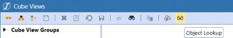
Figure 8.5
From the Object Lookup dialog, scroll down and select Substitution Variables. Substitution variables are commonly used in Cube Views to display information in the page caption and the Report’s header and footer. For example, if your organization uses multiple reporting currencies, you may want to use CVCurrency to display the reporting currency on Reports. Another common use is to display parameter selections; this helps the User understand what they are looking at.
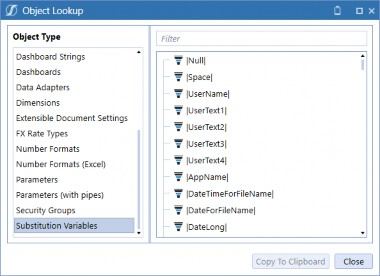
Figure 8.6
The next figure shows where substitution variables have been used to display Members on the
Cube View’s Page Caption.
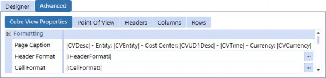
Figure 8.7
When viewing the Data Explorer, the page caption appears with the following information, based on the Cube View POV selections. Using substitution variables allows you to provide contextual information pertinent to the data being displayed.
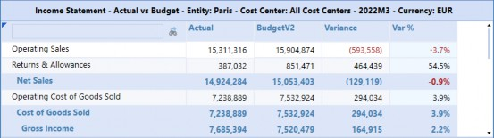
Figure 8.8
The same concept applies to substitution variables in the Report header and footer. See below, where we are using the same fields in the Report Header.
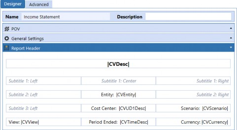
Figure 8.9
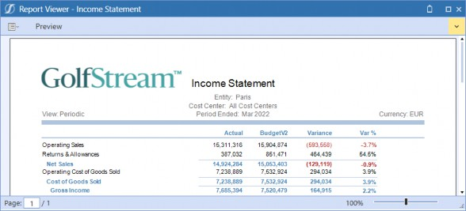
Figure 8.10
Taking Cube Views to the Next Level › Dynamic Cube Views
Parameters
Parameters can be used to drastically reduce the number of Cube Views required in your application by repurposing existing Cube Views, rows, and columns, and adding flexibility to Report properties. Parameters are located on the Application Dashboards menu and can be used throughout the application to provide lists and filters. Each Dashboard Maintenance Unit comes with a folder specifically for parameters; parameters, however, can be used across DMUs and in any Cube View.
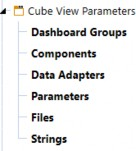
Figure 8.11
Taking Cube Views to the Next Level › Dynamic Cube Views › Parameters
Parameter Types
The six standard Parameter Types are Literal Value, Input Value, Delimited List, Bound List, Member List, and Member Dialog.
Literal Value parameters differ from the other Parameter Types in that they do not require the User to make a selection. They are set explicitly (or literally) and substitution variables can be used to query Global Settings like Time by setting the parameter to
|GlobalTime|, for instance.
Input Value parameters are the least commonly used Parameter Type from my experience; they require the User to key the Member Filter manually.
Delimited List parameters are great for circumstances when you need to define certain elements or display selections in a more intuitive way; an example of this will be explained in the row and column sharing section to follow.
Bound List parameters are the most advanced Parameter Type since they support commands for pre-defined Method Queries and SQL Queries.
Member Lists are flat lists presented in a drop-down menu.
Member Dialogs provide a tree structure of Members, which is often more intuitive for Users when picking a Report level.
Taking Cube Views to the Next Level › Dynamic Cube Views › Parameters
Parameter Example
In this example, we have a Cube View using Bound List, Member List, Member Dialog, and Delimited List parameters to show how they work together.
Remember the example about sharing Income Statement rows to the nine Cube Views? Using parameter-driven columns now reduces the number of Cube Views back to three. To make your Cube Views even more dynamic, you can parameterize the Row Sharing setting to display different rows (i.e., Financial Statements), allowing the User to select the rows and columns.
Figure 8.12 shows a parameter named RowSet we’ve created to use for row sharing, and Figure
8.13 shows the ColumnSet parameter, where we’ve defined the column sets we want our Users to make a selection from. Notice that the parameters list the row and column templates we’ve defined as the Value Items, but the display values are different. Since Users may not know what the Value Items mean – based on the naming convention – we use the display value to create labels for these templates so the User will see logical names when making selections.
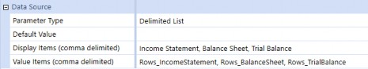
Figure 8.12
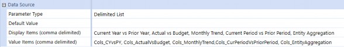
Figure 8.13
Once you’ve created delimited list parameters for |!ColumnSet!| and |!RowSet!|, you can apply the parameters to the Cube View’s sharing settings. This prompts the User to select which Financial Statement they need to view, as well as the columns they want to see when the Cube View is launched. This is incredibly useful when Reports need to be run by varying Scenarios, Time, Entity, and any other variables that query your data set.
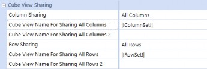
Figure 8.14
Now that our row and column filters have been created and applied to the Cube View, we’ll also want to enable Users to filter the Cube View’s overall POV settings. Instead of creating additional
Cube Views for our Entities, Cost Centers, and Time periods, we can parameterize these Dimensions so that Users can query data at any level without ever leaving this Cube View.
Below, we see where the new parameters have been applied to our Cube View in this example.
We’re only parameterizing a few Dimensions, but if we wanted to make a fully filter-enabled Cube View, we could create parameters for every Dimension and apply them accordingly. Keep in mind that there’s a trade-off with parameterizing the entire POV; the User would need to make a selection for each item when launching a Cube View.
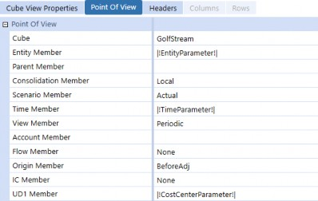
Figure 8.15
When the Cube View is launched, the User will be prompted to make the following selections. This seems simple, right? If we had parameterized all Dimensions, the User would see many more options to select, and that could prove overwhelming.
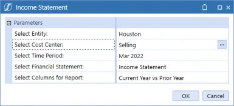
Figure 8.16
The Cube View is displayed below. In order to hide the Accounts with no data, we can apply row suppression and give our Users the ability to expose them.
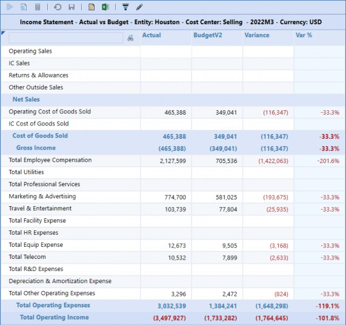
Figure 8.17
To allow Users to view suppressed rows, we need to change the Can Modify Suppression setting to
True. This setting will be made on the Income Statement Cube View.
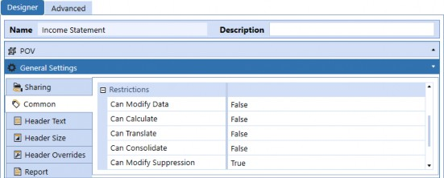
Figure 8.18
To apply row suppression, we need to return to the row template. We set all suppression settings for each of our rows to True, except for the last row, OperatingIncome_GT. We leave this row in case the Report truly has no data; then our Users will see a row with no data rather than a blank screen.
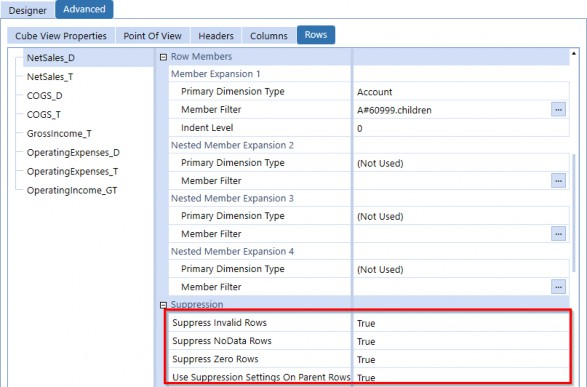
Figure 8.19
When we view the Data Explorer after applying suppression, we no longer see the blank rows, and there’s a visible button on the header bar that allows us to view the suppressed rows.
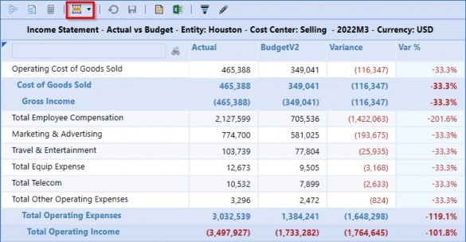
Figure 8.20
Taking Cube Views to the Next Level › Dynamic Cube Views › Parameters › Parameter Example
Parameterized Scaling
Organizations often scale their Financial Reports and show amounts in millions, billions, sometimes trillions. This can be a lengthy process and prone to error if you manually divide your data by different factors. OneStream has a simple solution for this, the Scale format, which is a numeric field indicating the number of characters to move the decimal, left or right. We created a parameter called ScaleParameter to prompt User selection. Scaling will be applied according to the selection made.
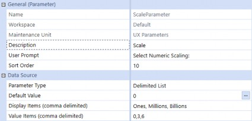
Figure 8.21
The scale format property is found on the Cube View’s general settings, but we only apply this to our numeric columns since the percentage column will not change.
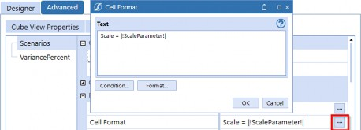
Figure 8.22
When we run the Report after applying the parameter to the scale format, we see an additional combo box with a prompt for Numeric Scaling.
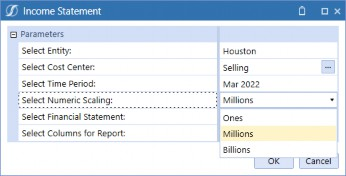
Figure 8.23
Here is the same Report again, but with the scaling format turned on.
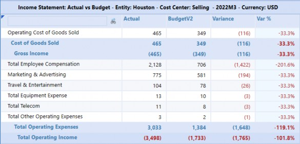
Figure 8.24
Taking Cube Views to the Next Level › Dynamic Cube Views › Parameters › Parameter Example
Security-based Parameters
Parameters are useful in guiding Users to the data they are looking for, while providing security. The parameter below shows how to use the Security Access Group field within a parameter. This parameter checks Entity Security Groups to determine what Entities to include in the list.
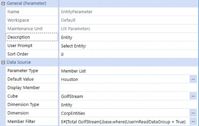
Figure 8.25
Taking Cube Views to the Next Level › Dynamic Cube Views › Parameters › Parameter Example
Culture Parameter
International organizations have added complexity when it comes to translating Financial Statements, with Users all over the world needing to consume and/or act on reporting metrics. But how do you act if your Reports are not in your native language? We parameterize a Report by applying the parameter below.
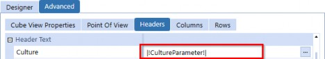
Figure 8.26
When the Report is launched, we see a prompt to select the language.
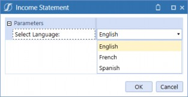
Figure 8.27 The Report shows the same data, but the text is in French.
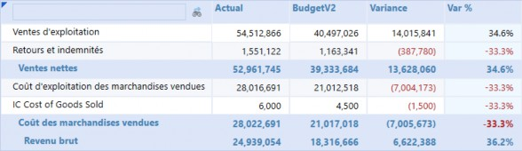
Figure 8.28
Taking Cube Views to the Next Level › Navigation Links
Dashboard to Open in Dialog
Navigation links can be used on fully formatted Reports where, instead of a Grid View being exposed, the source Cube View is displayed in a PDF Report. The Cube View row defines the navigation path so that (as you can see in Figure 8.29) you could create links with alternate Dashboards to show depending on the row; or – in our example – by Account row.
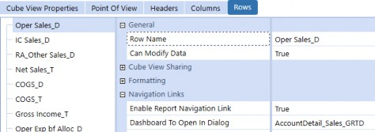
Figure 8.29
In the example below, the Operating Sales row is configured with a navigation link to show the Account detail that makes up the Operating Sales total. This is super helpful when you want to show Account detail for Operating Sales, Account trends for IC Sales, and chart visuals for Returns & Allowances. Of course, navigation links are completely configurable and should be built according to your Users’ requirements.
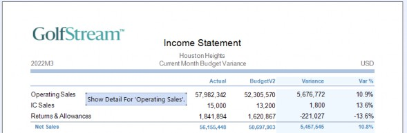
Figure 8.30
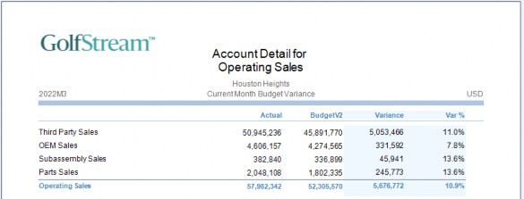
Figure 8.31
Taking Cube Views to the Next Level › Navigation Links
Linked Cube Views and Linked Dashboards
Linked Cube Views and Dashboards are intended to be exposed from a data grid. These are drill methods that Users navigate to by right-clicking on a data grid’s cell and viewing optional navigation paths, and can include multiple navigation links, but separated with a comma.
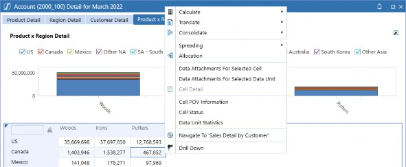
Figure 8.32
Taking Cube Views to the Next Level › Navigation Links
Bound Parameters
Dashboard parameters are commonly used to prompt User selection of reporting variables that determine the data queried when a Cube View is opened; these are stored parameters in a Dashboard Maintenance Unit. Bound Parameters are the parameter selections from a specific intersection held in memory when a Cube View is opened.
I regularly get asked the question, “Where do I find the Bound Parameters?” The short answer is that they don’t exist. So, what does this mean, and how do you use them? Let’s look at an example.
Taking Cube Views to the Next Level › Navigation Links › Bound Parameters
Assigning Bound Parameters
In Figure 8.33, we see the Budget Review Cube View; this is the source Cube View that will initially be displayed to the User. Under the Cube View Properties menu, you will notice a section labeled Navigation Links where the Linked Cube Views, Dashboards, and Bound Parameter Names have been assigned.
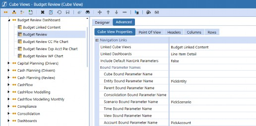
Figure 8.33
Taking Cube Views to the Next Level › Navigation Links › Bound Parameters
Applying Bound Parameters
In Figure 8.34, we see the Budget Linked Content Cube View; this is the target Cube View that we want to navigate to – from the source Cube View – in order to display trend detail. Under the Cube View Point of View menu, you’ll notice the Entity Member, Scenario Member, and Account Member selections are the same Bound Parameter names that we assigned to the source Cube View’s Navigation Links.
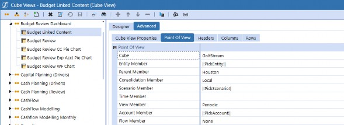
Figure 8.34
Taking Cube Views to the Next Level
Cube View Extender
Cube View Extender Business Rules are used when creating highly customized and formatted Cube View PDF Reports. These rules allow you to configure properties that are not available from the standard Cube View settings and apply only to the Cube View PDF output.
There are two methods for applying Cube View Extenders to a Cube View:
Inline Formula
Business Rule
Taking Cube Views to the Next Level › Cube View Extender
Inline Formula
To apply an Inline Formula to a Cube View, navigate to the Report and select Cube View Properties. Then, set the Custom Report Task property to Execute Cube View Extender Inline Formula, and click the ellipse button to access the Formula Editor.
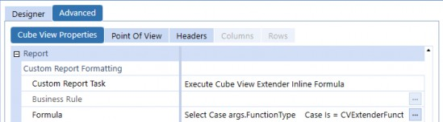
Figure 8.35
Figure 8.36 shows an example of an Inline Formula where we change the page header settings. Notice that the window exposes the code that runs when you launch a Cube View PDF; this functionality essentially provides the Business Rule framework for you.
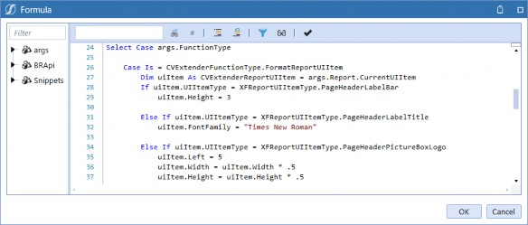
Figure 8.36
Inline Formula use of Cube View Extenders is recommended when you need to customize a single Cube View or when the customization differs by Cube View. For instance, if you want to display the Balance Sheet Report title font size as 12, the Income Statement Report font size as 14, and the Cash Flow Report title font as bold, you can quickly apply an inline formula directly to your Cube Views as needed.
Taking Cube Views to the Next Level › Cube View Extender
Business Rule
To apply Business Rule logic to a Cube View, navigate to the Report and select Cube View Properties. Set the Custom Report Task property to Execute Cube View Extender Business Rule, and select the appropriate Business Rule.
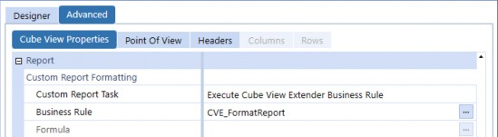
Figure 8.37
Cube View Extender Business Rules are located under the Cube View Extender folder from the
Business Rules menu, as shown in Figure 8.38.
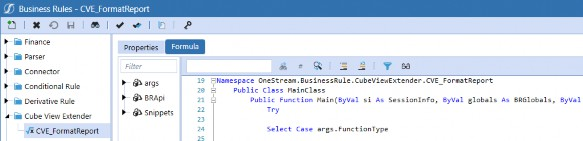
Figure 8.38
Business Rules are recommended when you want to apply formatting to multiple Cube Views without manually inserting the Inline Formula into each Report. Something to consider – when using Business Rules – is who will be creating Cube Views that require custom formatting, and this may prompt you to proactively create a variety of Business Rules that apply to specific groups of Reports. For example, if you require specific formatting for external reporting, and another User – who is unfamiliar with Inline Formulas – is creating the Reports, you may benefit from creating Business Rules for said User to choose from.
Over the years, I have found myself recreating custom formatting for three main Report groups: Financial Statements, footnotes, and supplemental Reports. After realizing how much time I was spending on formatting and tracking down all of the Reports that I needed to update, a lightbulb went off! I can create the three rules and never have to touch the individual Reports again!
Taking Cube Views to the Next Level › Cube View Extender
Common Uses
Cube View Extenders are intended to allow the formatting of objects that are not configurable from standard Cube View settings (such as page headers, footer headers, page layout, and Report headers). They can also be used to supplement conditional formatting that applies to the data cells for multiple Cube Views, without manually configuring your entire Cube View Inventory.
Figure 8.39 shows a Cube View PDF with standard Cube View formatting. While there is nothing wrong with this Report, we want to make some cosmetic changes, including shrinking the logo, changing the title font to Times New Roman, and drawing the User’s eye to certain variances.
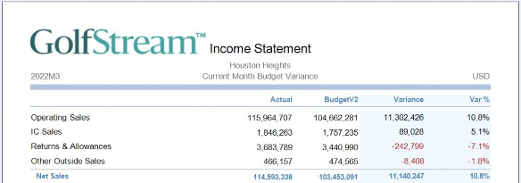
Figure 8.39
See Figure 8.40 for the PDF Report display after we’ve applied the Cube View Extender. Our logo is proportionately sized, our Statement title is in Times New Roman font, and conditional formatting has been applied to display cells that exceed 10% highlighted in yellow, and cells less than -5% are shown as bold, italic, and in red font.
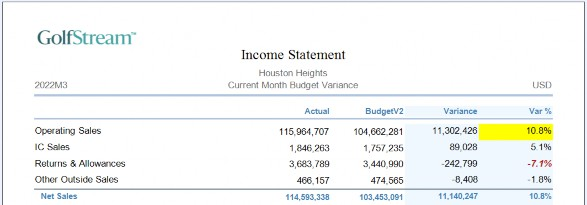
Figure 8.40
Below is the syntax used to apply conditional formatting to the Variance % cells. To modify the data grid section of the Report, the code is calling XFReportUIItem.DataCellLabel, but in order to limit formatting to the variance % column for detail rows, we need to apply filters.
Line 42 refers to the column name I’ve used in my Cube View to display the Variance %, and line 43 refers to the row name I’ve used in my Cube View to display the subtotals; the If Not syntax indicates that the formatting will not be applied to subtotals.
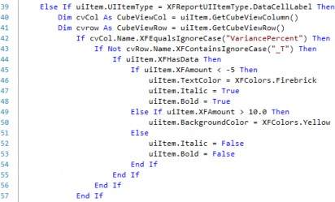
Figure 8.41
Another common use of Cube View Extenders is when you need to display Cube View PDFs that appear similar to Grid Views with borders on data cells as well as headers. Below is the syntax that would produce the output shown in Figure 8.43.
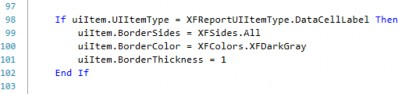
Figure 8.42
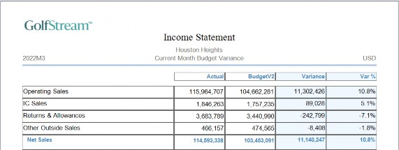
Figure 8.43
Taking Cube Views to the Next Level › Cube View Extender
Fields and Properties
Available fields from the XFReportUIItem Inventory are listed below; these are the Report fields that can be modified within a Cube View Extender. OneStream’s built-in Intellisense feature guides you as you insert syntax into the code lines; once you’ve started querying the items and type uiItem.UIItemType = XFReportUIItemType. a drop-down menu will appear with the following options.
| PageHeaderLabelBar | PageHeaderLabelLeft3 | PageFooterPageNumber |
| PageHeaderLabelTitle | PageHeaderLabelLeft4 | PageFooterLabelLeft1 |
| PageHeaderPictureBoxLogo | PageHeaderLabelCenter1 | PageFooterLabelLeft2 |
| DataCellLabel | PageHeaderLabelCenter2 | PageFooterLabelLeft3 |
| ColHeaderLabel | PageHeaderLabelCenter3 | PageFooterLabelLeft4 |
| RowHeaderLabel | PageHeaderLabelCenter4 | PageFooterLabelCenter1 |
| UpperLeftLabel | PageHeaderLabelRight1 | PageFooterLabelCenter2 |
| LabelBottomLine1 | PageHeaderLabelRight2 | PageFooterLabelCenter3 |
| LabelBottomLine2 | PageHeaderLabelRight3 | PageFooterLabelCenter4 |
| LabelTopLine1 | PageHeaderLabelRight4 | PageFooterLabelRight1 |
| LabelTopLine2 | PageFooterLine | PageFooterLabelRight2 |
| PageHeaderLine | PageFooterDate | PageFooterLabelRight3 |
| PageHeaderLabelLeft1 | PageFooterLabelTitle | PageFooterLabelRight4 |
| PageHeaderLabelLeft2 |
Figure 8.44
The OneStream API Details & Database Documentation utility is extremely helpful for searching database components, objects, and Members. Below is a view that contains the objects available to format, displayed in the right pane. This utility provides a view into the database framework and guides you through the solution’s built-in Intellisense feature.
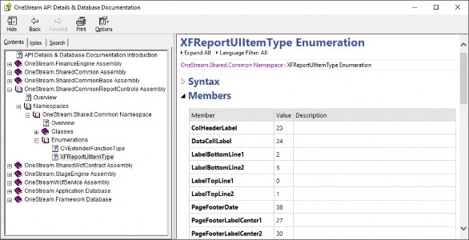
Figure 8.45
Taking Cube Views to the Next Level
Conclusion
In this chapter, we covered a few advanced Cube View design techniques to minimize maintenance of your application, streamline consistency in formatting and, most importantly, provide your Users with seamless navigation to meaningful information.
Row and column sharing between and across Cube Views mean fewer redundancies in Cube Views and increased accuracy in reporting when you’re viewing consistent data.
Parameters are perhaps the most useful tool at your disposal; they greatly reduce the number of Cube Views you’ll need to build during an implementation, provide your Users with the flexibility to query data when (and how) they want on-demand, and truly make the most robust Cube structures dynamic.
Navigation links make data analysis and viewing much more intuitive by guiding your Users to the underlying data that can be displayed in a plethora of ways.
Cube View Extender Rules are your friends! They can seem a little scary when you think of them like coding, but with some solid examples to reference, the formatting possibilities are endless.